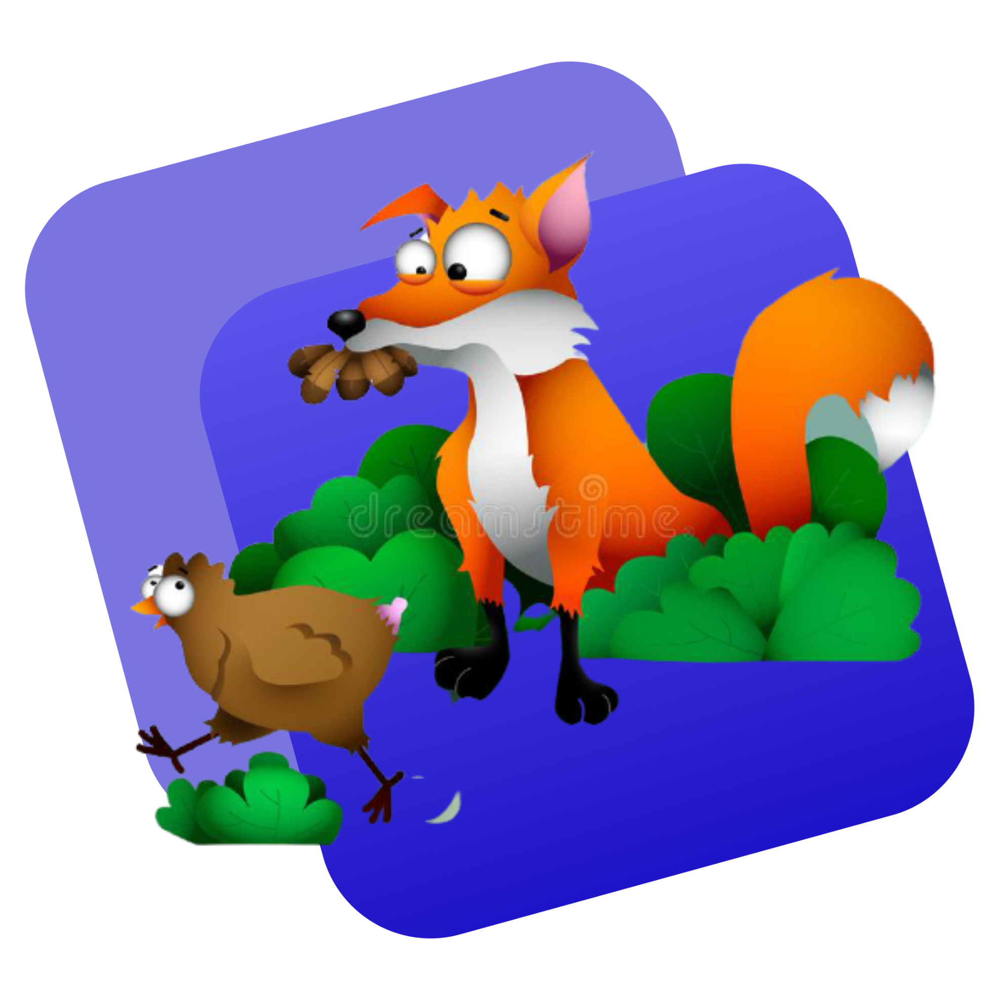

Skip The Diet,
Eat Healthy
With Food Network
Eating a healthy diet is not about strict limitations, staying unrealistically thin, or depriving yourself of the foods you love. Rather, it’s about feeling great, having more energy, improving your health, and boosting your mood.
Order Now


About Me
Foxes belong to the scientific Canidae family, like dogs and wolves. Because of their smaller size, though, they tend to hunt more like cats. Their vocalizations also resemble a mixture of both dog and cat sounds.
Learn More